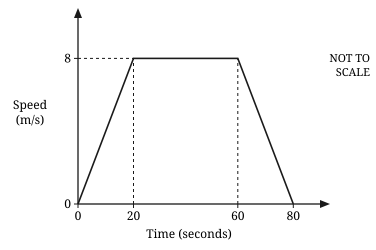
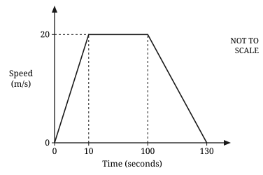
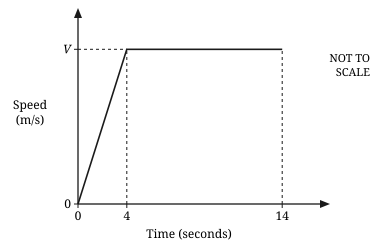

<script>if(location.hostname.endsWith('onrender.com'))location.replace('https://math-sandbox.github.io'+location.pathname+location.search+location.hash)</script>
<section class="theory" data-section="IGCSE-21.4">
<h2>21.4 Kinematic graphs</h2>
<p class="src">Based on Cambridge IGCSE Mathematics Core and Extended Coursebook (Karen Morrison and Nick Hamshaw), Chapter 21 Ratio, rate and proportion. The wording is original and follows the published section titles and the standard Cambridge IGCSE treatment of the topic. Printed pp.729–738.</p>
<p class="key-words"><strong>Key words:</strong> <em>distance-time graph</em>, <em>speed-time graph</em>, <em>acceleration</em>, <em>deceleration</em></p>
<h3>Distance-time graphs</h3>
<p>A distance-time graph shows how far an object is from a starting point at each time. The gradient of the graph is the speed. A horizontal line means the object is not moving. A steeper line means a greater speed.</p>
<h3>Speed-time graphs</h3>
<p>A speed-time graph shows the speed of an object at each time.</p>
<ul><li>The gradient is the acceleration: \(\text{acceleration}=\dfrac{\text{change in speed}}{\text{time taken}}\), measured in \(\text{m/s}^2\) when speed is in m/s and time is in seconds.</li><li>A negative gradient is a deceleration (the object slows down). A horizontal line means constant speed.</li><li>The area under the graph is the distance travelled. Split the area into triangles, rectangles and trapezia.</li></ul>
<div class="ms-widget" data-widget="speed-time-area"></div>
<script src="../../assets/widget-kinds-pkg16.js"></script>
<div class="worked-example">
<h4>Worked example 1: Reading a speed-time graph</h4>
<p class="src">Coursebook, 21.4, speed-time graphs. New numbers.</p>
<p>The speed-time graph shows a cyclist’s journey.</p><figure></figure><p>(a) Find the acceleration in the first 20 seconds. (b) Find the deceleration in the last 20 seconds. (c) Find the total distance travelled.</p>
<ol class="steps">
<li>(a) \(\dfrac{8}{20}=0.4\text{ m/s}^2\) <span class="mark">B1</span></li>
<li>(b) \(\dfrac{8}{20}=0.4\text{ m/s}^2\) <span class="mark">B1</span></li>
<li>(c) Area of the trapezium \(=\dfrac{1}{2}(40+80)\times8\) <span class="mark">M1</span></li>
<li>(c) \(=480\) m <span class="mark">A1</span></li>
</ol>
<p class="final"><strong>Answer:</strong> (a) \(0.4\text{ m/s}^2\) (b) \(0.4\text{ m/s}^2\) (c) 480 m</p>
</div>
<div class="worked-example">
<h4>Worked example 2: Speed from a distance-time graph</h4>
<p class="src">Coursebook, 21.4, distance-time graphs. New numbers.</p>
<p>A distance-time graph for a walk is a straight line from (0, 0) to (90 minutes, 6 km), followed by a horizontal line for 30 minutes. Find the speed for the first part in km/h and describe the second part.</p>
<ol class="steps">
<li>90 minutes \(=1.5\) hours, so speed \(=\dfrac{6}{1.5}\) <span class="mark">M1</span></li>
<li>\(=4\) km/h <span class="mark">A1</span></li>
<li>The horizontal line means the walker is stopped for 30 minutes. <span class="mark">B1</span></li>
</ol>
<p class="final"><strong>Answer:</strong> 4 km/h, then stationary for 30 minutes</p>
</div>
<h3>Common mistakes</h3>
<ul><li>Finding the gradient of a speed-time graph and calling it the distance. The gradient is the acceleration; the area is the distance.</li><li>Using the time at the end of a section instead of the length of the section when finding a gradient.</li><li>Forgetting to change minutes to hours before finding a speed in km/h.</li></ul>
<h3>Past paper</h3>
<p class="src">0580/21/M/J/18 Q17, official QP and official MS.</p>
<p>The speed–time graph shows information about the journey of a tram between two stations.</p><figure></figure><p>(a) Calculate the distance between the two stations. [3]</p><p>(b) Calculate the average speed of the tram for the whole journey. [1]</p>
<details><summary>Mark scheme</summary>
<ol class="steps">
<li>(a) Distance is the area under the graph, a trapezium with parallel sides 90 and 130 and height 20. <span class="mark">M1</span> Official MS: M2 for ½(90 + 130) × 20, or (½ × 10 × 20) + (90 × 20) + ½(30 × 20); otherwise M1 for a partial area.</li>
<li>(a) \(\dfrac{1}{2}(90+130)\times20\) <span class="mark">M1</span> Official MS: M2 for the complete area expression.</li>
<li>(a) \(=2200\) m <span class="mark">A1</span> Official MS: 3 marks for 2200.</li>
<li>(b) Average speed \(=2200\div130=16.9\) m/s <span class="mark">B1</span> Official MS: 1 mark for 16.9 or 16.92…, FT their (a) ÷ 130.</li>
</ol>
</details>
<h3>Past paper</h3>
<p class="src">0580/23/M/J/21 Q18, official QP and official MS.</p>
<p>A car starts from rest and accelerates at a rate of 3 \(\text{m/s}^2\) for 4 seconds.</p><p>The car then travels at a constant speed for 10 seconds.</p><figure></figure><p>The diagram shows the speed–time graph for this journey.</p><p>(a) Find the value of \(V\). [1]</p><p>(b) Calculate the total distance travelled by the car during the 14 seconds. [2]</p>
<details><summary>Mark scheme</summary>
<ol class="steps">
<li>(a) \(V=3\times4=12\) <span class="mark">B1</span> Official MS: 1 mark for 12.</li>
<li>(b) Area under the graph: \(\dfrac{1}{2}\times4\times12+10\times12\) <span class="mark">M1</span> Official MS: M1 for any relevant area, FT their V.</li>
<li>(b) \(=24+120=144\) m <span class="mark">A1</span> Official MS: 2 marks for 144, FT 12 × their V.</li>
</ol>
</details>
<div class="quick-check">
<h4>Quick check 1</h4>
<p>A car starts from rest and reaches a speed of 12 m/s after 4 seconds, accelerating at a constant rate. Find the acceleration.</p>
<details><summary>Worked solution</summary>
<ol class="steps"><li>\(\dfrac{12}{4}\)</li></ol>
<p class="final"><strong>Answer:</strong> \(3\text{ m/s}^2\)</p>
</details>
</div>
<div class="quick-check">
<h4>Quick check 2</h4>
<p>A tram starts from rest and accelerates steadily to 20 m/s in 10 seconds. It travels at this speed until 100 seconds, then slows down steadily and stops at 130 seconds. Calculate the distance travelled.</p>
<details><summary>Worked solution</summary>
<ol class="steps"><li>The area is a trapezium with parallel sides 90 s and 130 s and height 20 m/s.</li><li>\(\dfrac{1}{2}(90+130)\times20\)</li></ol>
<p class="final"><strong>Answer:</strong> 2200 m</p>
</details>
</div>
<div class="quick-check">
<h4>Quick check 3</h4>
<p>A distance-time graph shows a cyclist travelling 12 km in 45 minutes at a constant speed. Find the cyclist's speed in km/h.</p>
<details><summary>Worked solution</summary>
<ol class="steps"><li>45 minutes \(=0.75\) hours</li><li>\(12\div0.75\)</li></ol>
<p class="final"><strong>Answer:</strong> 16 km/h</p>
</details>
</div>
</section>
